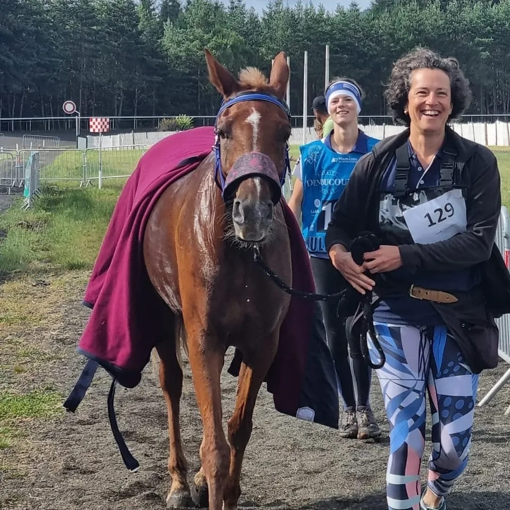
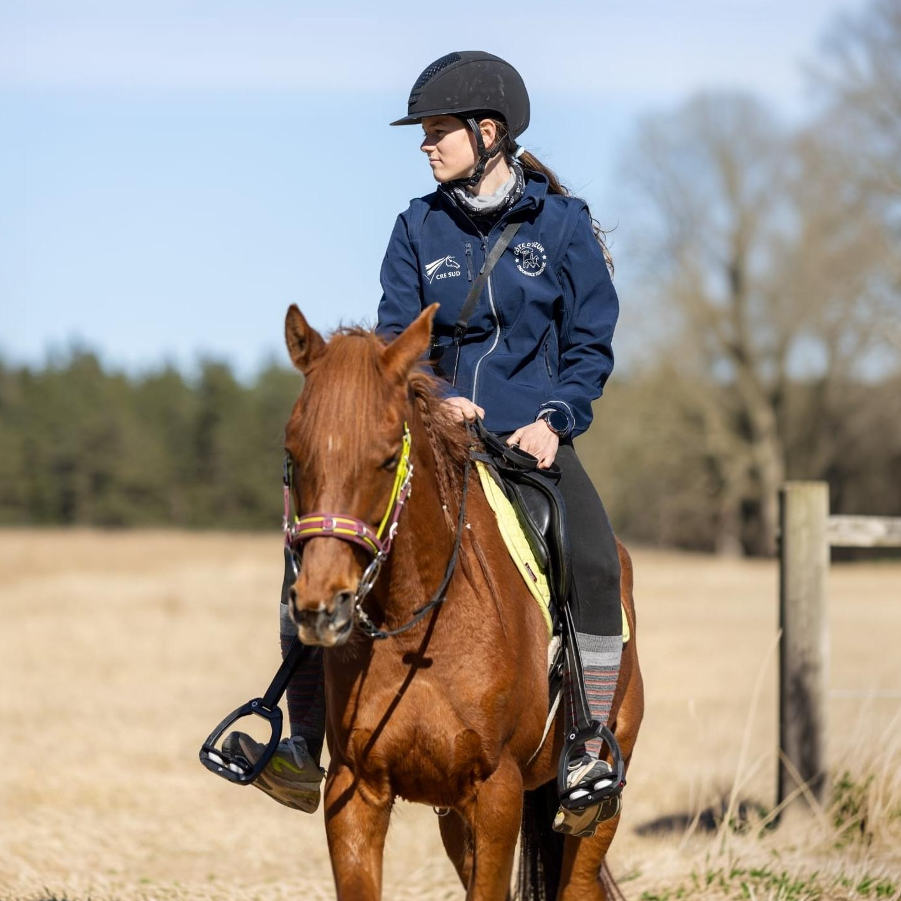
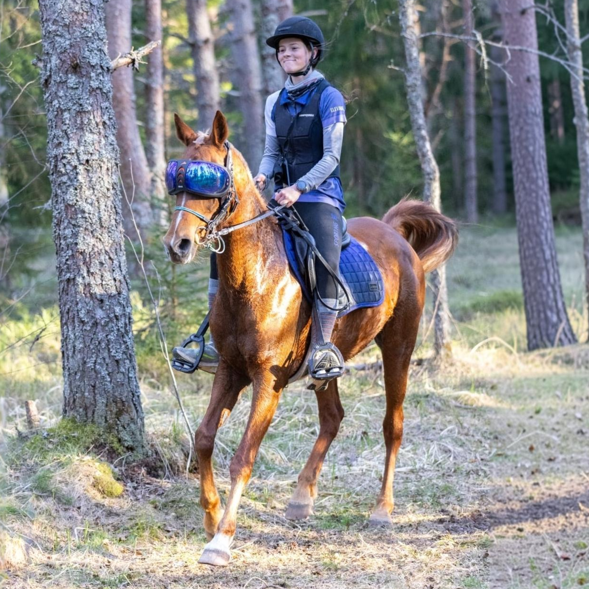

Passion. Performance. Partnership.
My passion for horses began at the age of three. Since then, horses have been an essential part of my life and have shaped both my personal and sporting journey.
My main focus today is Purebred Arabian and Angloarabian horses for endurance sport. Through years of riding and competing, I have developed a strong understanding of the qualities required in a successful endurance horse: stamina, soundness, athletic ability, a strong mind and, above all, a genuine willingness to perform.
I have personally competed in endurance races of up to 100 km. One of the most important chapters of my sporting journey has been my partnership with my mare Myna des Aubues. Together, we achieved 3rd place at the French 80 km Endurance Championships in 2023, followed by Vice-Champion of France over 80 km in 2024.
From 2022 to 2026, I was part of JEEP Jeunes Endurance Équestre PACA, a youth endurance programme led by Virginie Atger. This experience allowed me to develop my riding, strengthen my knowledge of endurance and gain valuable experience within a structured sporting environment.


I also participated in the French national endurance selection training camps in Uzès, alongside Olivier Hénocque, on 17–18 February 2024 and 21–22 February 2026. These experiences gave me valuable insight into the standards, preparation and qualities required at a high level of endurance sport.
I believe that working with horses means never stopping learning.I continuously seek to expand my knowledge and develop my skills in order to provide my horses with the best possible care. I completed a two-month internship in saddle fitting, gaining a deeper understanding of saddle fit and its importance for comfort, movement and performance.
I have also furthered my knowledge of barefoot hoof care, because I believe that without healthy feet, there is no sound and sustainable athlete. The foundation of every endurance horse is its feet, and understanding their care is an essential part of keeping my horses healthy, comfortable and able to perform at their best.
All of these experiences have shaped my vision of the ideal endurance horse. I am not simply looking for horses to sell. I carefully select quality Arabian horses with athletic potential, soundness, a strong mind and the qualities needed to become successful long-term partners.
At Faivre Arabians, every horse is selected with passion, experience and a clear goal: finding the right horse for the right rider.
For me, buying and selling horses is about much more than a transaction. I do not simply buy horses to resell them — I also train, develop and enhance their potential, giving each horse the time, experience and preparation needed to progress in endurance sport. My goal is to recognise the qualities within each individual horse, develop them through training and create the foundation for a successful, lasting partnership between horse and rider.
Arabian horses for endurance — selected, trained and developed with passion, experience and ambition.
